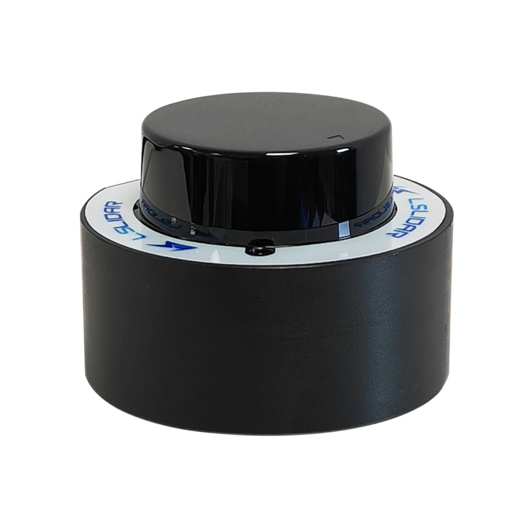

LiDAR Sensors
Our robots support two LiDAR options:
Short Range LiDAR
Long Range LiDAR
These sensors enhance navigation and mapping capabilities, and fitting various operational needs.
Short Range LiDAR
The Short Range LiDAR is a compact and ideal for indoor environments and tight spaces. Its high accuracy and 360 degrees scanning make it perfect for precise mapping and obstacle avoidance in confined areas.
{kind=link}
Model |
Short Range LiDAR |
|---|---|
Wavelength |
905 nm |
Scanning Angle |
360° |
Detection Range |
0 m ~ 12 m (70% reflectivity) |
Detection Accuracy |
±3 cm (0~6 m); ±4.5 cm (≥6m) (70% reflectivity) |
PRF |
4.5 kHz |
Angular Resolution |
0.48°~0.96° |
Scanning Rate |
6 Hz ~ 12 Hz |
Output Data Resolution |
15 mm |
Data Content |
Azimuth, Distance, Intensity |
Power Supply |
5 VDC (4.75 V ~ 5.25 V) |
Operating Temperature |
-10°C ~ 40°C |
Storage Temperature |
-30°C ~ 70°C |
Maximum Acceptable Ambient Light Intensity |
4 K Lux |
Motor |
Built-in Brushless Motor |
Communication Interface |
Standard Asynchronous Serial Port (Baud Rate: 230400 bps) |
Long Range LiDAR
The Long Range LidAR is designed for long-range detection, suitable for outdoor applications and large-scale enviromnets. With a 120m range and robust build, it excels in extensive mapping and navigation tasks.

Model |
Long Range LiDAR |
|---|---|
Wavelength |
905 nm |
FPS |
5 / 10 / 20 Hz |
Laser Class |
Class I |
Data Point Generating Rate |
Single Echo, Dual Echo |
Channels |
1 |
Communication Interface |
Ethernet 100base-TX, PPS |
Detection Method |
TOF |
Input Voltage |
9V ~ 32V DC |
Detection Range |
120m detection range, 80m@10% |
Power Consumption |
7W (10Hz) |
Range Accuracy |
±3 cm |
Range Precision |
±1 cm (1σ) |
IP Grade |
IP67 |
Operating Temperature |
-20°C ~ 60°C |
Horizontal FOV |
360° |
Vertical FOV |
N/A |
Horizontal Resolution |
0.09° / 0.18° / 0.36° |
Vertical Resolution |
N/A |
Vibration Test |
5Hz-2000Hz, 3G rms |
Shock Test |
500m/sec², lasting for 11ms |
Weight |
1050g |
Dimensions (DxH) |
Ф102x77.9 mm |
LiDAR Compatabillity by Robot Model
Magni Mini: Equipped with the Short Range LiDAR.
Magni Medi: Supports both Short Range LiDAR and Long Range LiDAR.